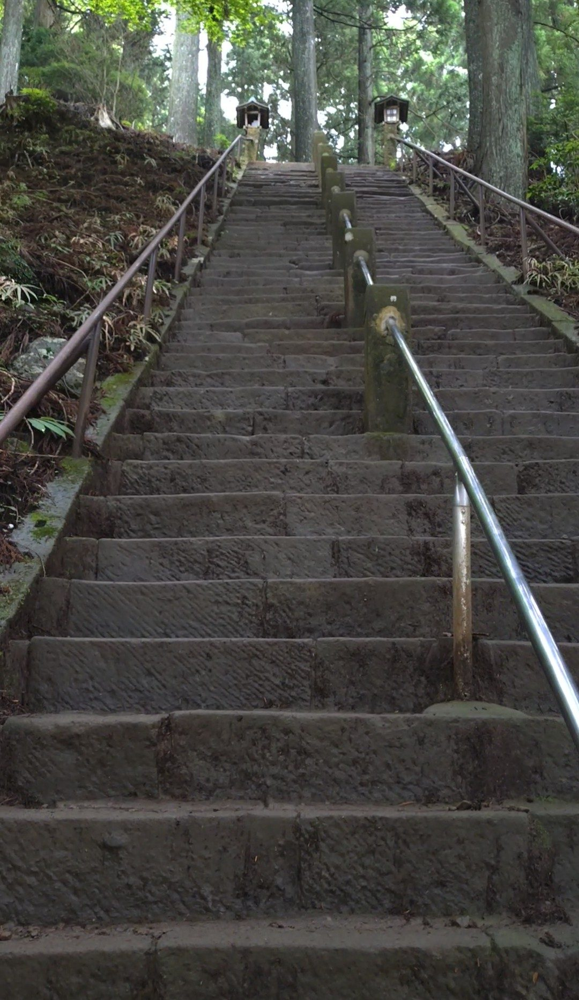

大山阿夫利神社の下社まで来ると、さらに大山頂上への登山に挑戦することができます。その登山道の入口のそばに、ひっそりと114段の石段が存在します。神奈川中央交通バスのバス停「大山ケーブル」からこま参道・男坂または女坂を経由して徒歩約30分。注意していないと見逃してしまいそうな場所にありますが、大木のアーチと急直線の組み合わせは、大山の深さを感じさせる印象的な石段です。
神奈川中央交通バス「大山ケーブル」バス停下車、こま参道・男坂または女坂を経由して徒歩約30分。大山阿夫利神社下社に到着後、大山登山道の入口案内板のそばを確認してみてください。
石段は急勾配で、整っていない箇所や崩れている部分もあります。グリップのある登山靴が必須です。下社から頂上への登山を続ける場合は登山装備で臨んでください。雨上がりは特に足元が滑りやすくなります。
大山阿夫利神社の下社エリアを歩いていると、大山頂上への登山道の入口を示す案内板が現れます。ここが本格的な大山登山のスタート地点です。登山道の案内板を眺めていると、その横にひっそりと石段が存在することに気づきます。知らなければ通り過ぎてしまいそうな、控えめな存在感です。

入口に立つと、石段の性格がすぐに伝わってきます。両脇に太く背の高い木々が並んでいて、その葉が頭上でアーチをつくっています。石段は急で直線的で、自然の中をそのまま真っすぐ上へと突き進むイメージです。大木の存在感に圧倒されながら、一歩踏み出します。

登り始めると、大木の存在感がさらに増します。幹の太さと高さが圧倒的で、人間の小ささを感じます。石段は整っている箇所もあれば、崩れかかっている箇所もあり、一段一段を確認しながら登る必要があります。整備された参道とは異なる、山の石段ならではの野趣があります。

114段を登り切ると、石の灯篭や石碑、石が積み重なったような構造物が現れます。大山の登山道はごろごろとした石が特徴的で、その大山らしさがここにも現れています。登山道の入口という場所の性格が、この石の景色によく表れていると感じました。

頂上から石段の方向を振り返ると、大木の存在感が改めて印象に残ります。そしてよく見ると、手すりを支える支柱が石でできているようです。金属ではなく石の支柱——大山の石の文化を象徴しているようで、細部にまで大山らしさが感じられました。大山に来たなら、ぜひ登山道の入口そばのこの石段にも目を向けてみてください。